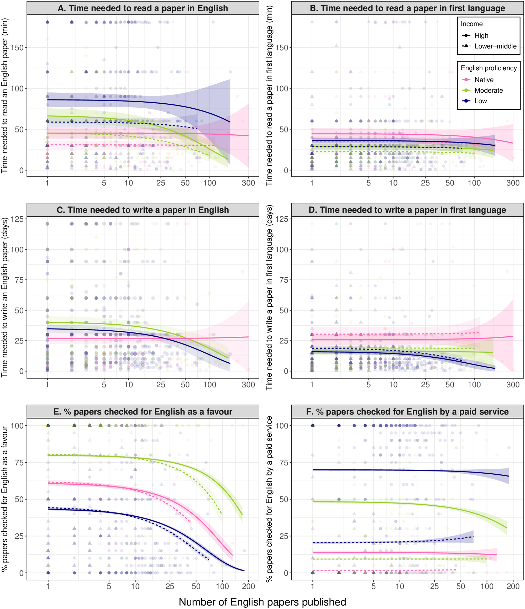
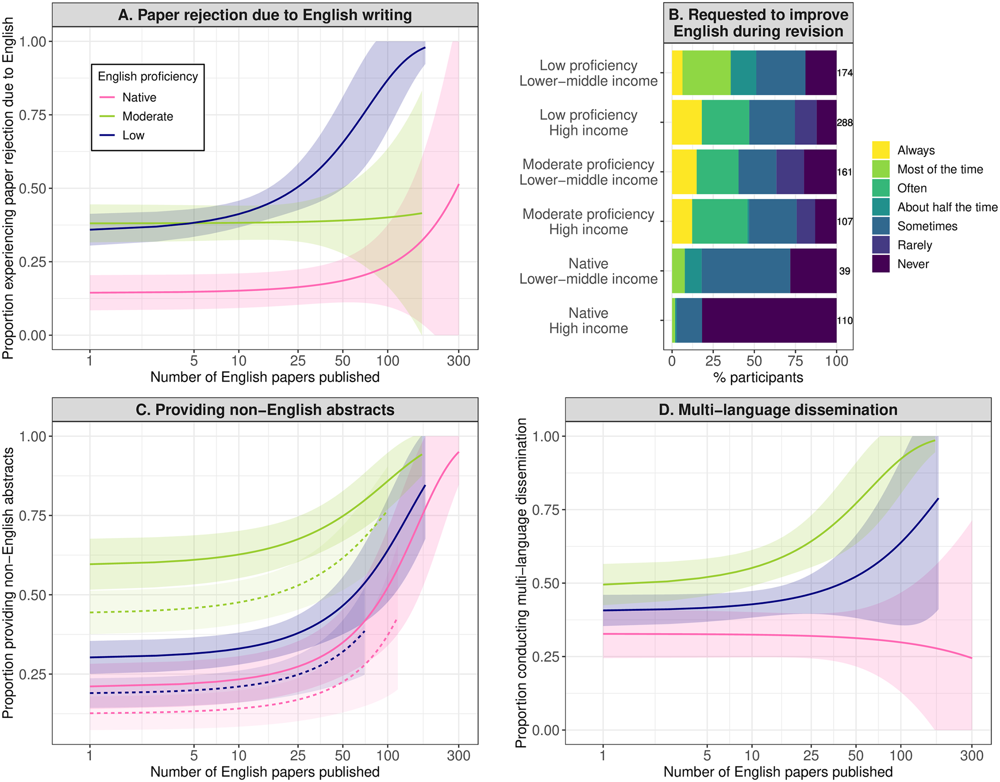
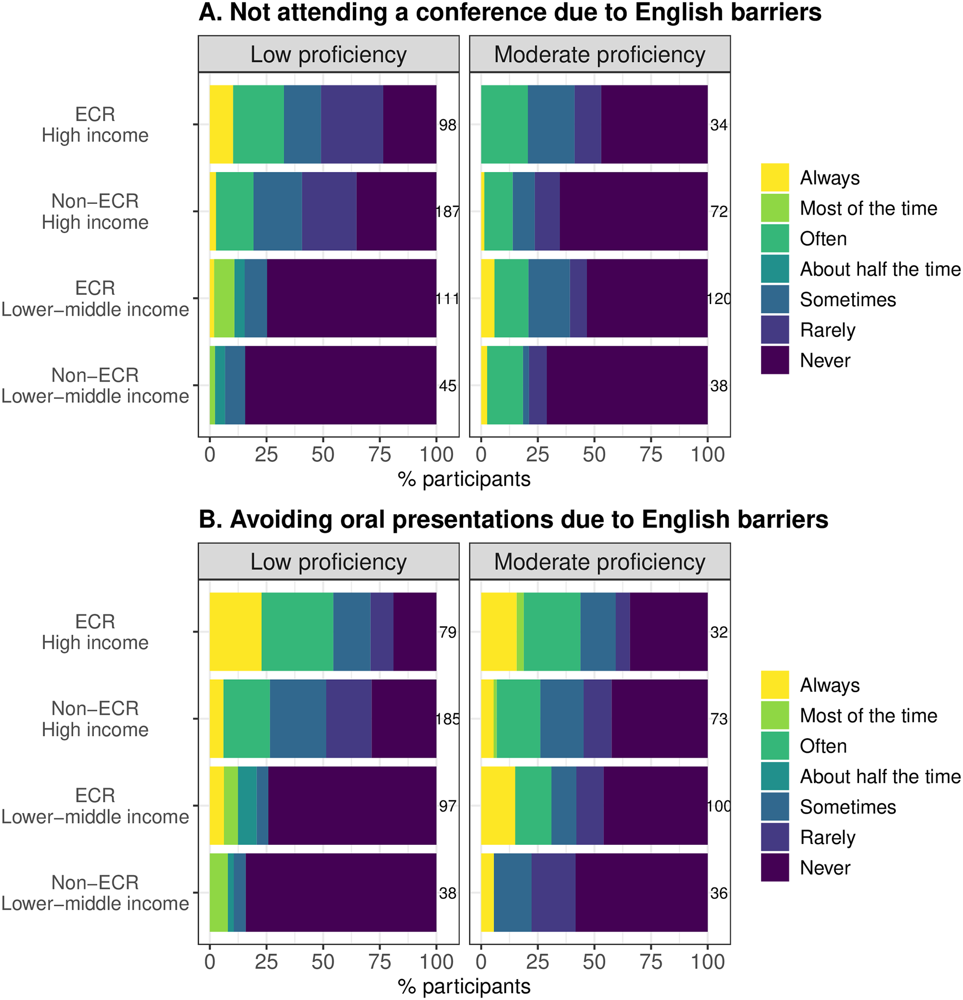
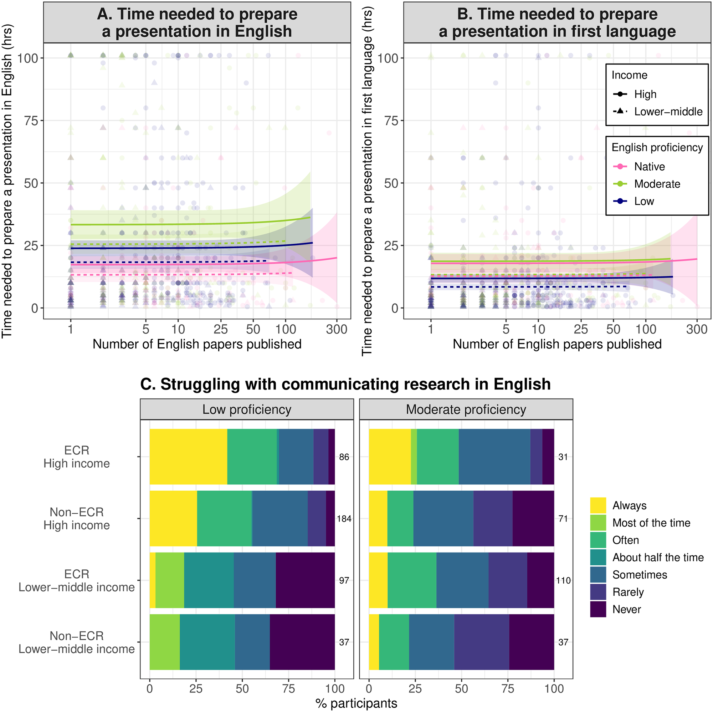
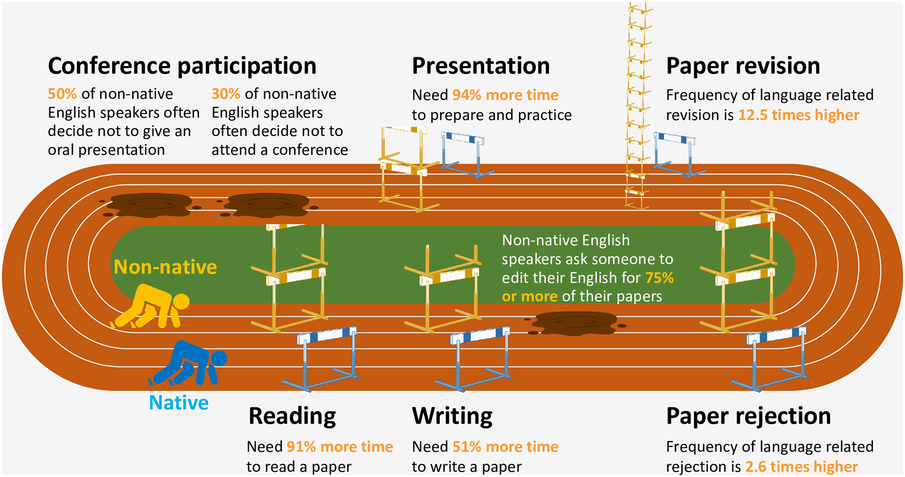
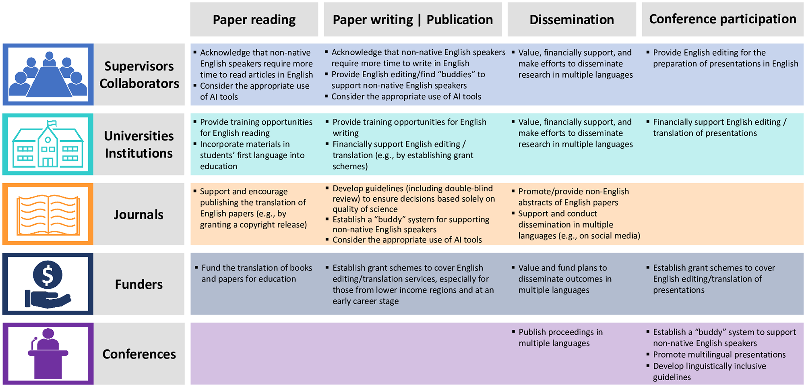

O uso do inglês como língua comum da ciência representa um grande impedimento à maximização da contribuição de falantes não nativos de inglês para a ciência. No entanto, poucos estudos quantificaram as consequências das barreiras linguísticas para o desenvolvimento da carreira de pesquisadores que são falantes não nativos de inglês. Por meio de uma pesquisa com 908 pesquisadores em ciências ambientais, este estudo estima e compara o esforço necessário para conduzir atividades científicas em inglês entre pesquisadores de diferentes países e, portanto, de diferentes contextos linguísticos e econômicos. Nossa pesquisa demonstra que falantes não nativos de inglês, especialmente no início de suas carreiras, despendem mais esforço do que falantes nativos na condução de atividades científicas — desde a leitura e a escrita de artigos e a preparação de apresentações em inglês até a disseminação de suas pesquisas em múltiplos idiomas. As barreiras linguísticas também podem levá-los a não participar de conferências internacionais conduzidas em inglês, ou a não fazer apresentações orais nelas. Instamos as comunidades científicas a reconhecer e enfrentar essas desvantagens para liberar o potencial inexplorado dos falantes não nativos de inglês na ciência. Este estudo também propõe soluções que podem ser implementadas hoje por indivíduos, instituições, periódicos, financiadores e conferências.
Consulte os arquivos de Informações de Apoio (S2–S6 Text) para os Resumos em Idiomas Alternativos e as Figs 5 e 6.
Este estudo revela que falantes não nativos de inglês, especialmente no início de suas carreiras, despendem mais esforço do que falantes nativos na condução de atividades científicas — desde a leitura e a escrita de artigos e a preparação de apresentações em inglês até a disseminação de suas pesquisas em múltiplos idiomas.
Liberar o potencial de comunidades em desvantagem é um dos desafios urgentes da ciência. A colaboração envolvendo um grupo diverso de pessoas pode resolver problemas de forma mais eficaz [1] e produzir níveis mais altos — e mais relevantes — de inovação científica [2] e de impacto [3]. Hoje, a necessidade de recorrer à diversidade de pessoas, visões, sistemas de conhecimento e soluções para enfrentar com sucesso desafios globais, como as crises da biodiversidade e do clima [4–6], é cada vez mais reconhecida, e há uma necessidade crítica de fazê-lo em múltiplas disciplinas [7–9].
Aumentar a diversidade nas comunidades científicas exige derrubar as barreiras que impedem o desenvolvimento da carreira de grupos de pesquisadores em desvantagem — e uma dessas barreiras tem raiz na língua. Embora o uso do inglês como língua comum da ciência tenha, sem dúvida, contribuído para o avanço científico [10], esse benefício traz custos consideráveis para aqueles cuja primeira língua não é o inglês (doravante, falantes não nativos de inglês). Os falantes não nativos de inglês, que constituem a maioria da população mundial, enfrentam uma série de desafios para conduzir e comunicar ciência em inglês, o que inevitavelmente impõe uma carga excessiva ao desenvolvimento de suas carreiras científicas. Essa questão é amplamente reconhecida [11,12], já que o inglês desempenha hoje papel dominante na execução e na comunicação da ciência, bem como na avaliação de cientistas, em praticamente qualquer disciplina científica [13]. Por exemplo, a recomendação sobre ciência aberta da Organização das Nações Unidas para a Educação, a Ciência e a Cultura (UNESCO), adotada por 193 Estados-membros em 2021, destaca a necessidade de superar as barreiras linguísticas para alcançar 4 dos valores centrais e princípios orientadores da ciência aberta (Equidade e justiça, Diversidade e inclusão, Igualdade de oportunidades e Colaboração, participação e inclusão) [14]. Ainda assim, as comunidades científicas carecem desesperadamente do esforço conjunto necessário para reduzir as barreiras linguísticas enfrentadas por falantes não nativos de inglês e promover a equidade na ciência.
As dificuldades enfrentadas por falantes não nativos de inglês na condução da ciência, e como elas se traduzem em inúmeras desvantagens para o desenvolvimento da carreira, ainda são pouco compreendidas. Estudos anteriores relataram a experiência e a percepção de barreiras linguísticas em falantes de uma única língua não inglesa [15] ou em certos tipos de atividades científicas, como a escrita de artigos [16], a publicação de artigos [17] e a disseminação de pesquisas [18]. Tentativas de avaliar as desvantagens de ser falante não nativo de inglês na ciência estão emergindo (p. ex., [19,20]). No entanto, até o momento, nenhum estudo publicado quantificou como múltiplos aspectos das barreiras linguísticas afetam simultaneamente o desenvolvimento da carreira de falantes de diferentes línguas não inglesas, em comparação com falantes nativos de inglês.
Este estudo aborda essa lacuna de conhecimento estimando, primeiramente, o esforço (p. ex., tempo e custo financeiro) exigido de pesquisadores individuais na condução de uma variedade de atividades científicas em inglês. Comparamos o esforço estimado entre pesquisadores de países com diferentes contextos linguísticos e econômicos, com o objetivo de quantificar as múltiplas desvantagens enfrentadas por falantes não nativos de inglês que praticam ciência.
Conduzimos uma pesquisa on-line com um total de 908 pesquisadores em ciências ambientais (particularmente ecologia, biologia evolutiva, biologia da conservação e disciplinas correlatas) que publicaram pelo menos um artigo revisado por pares em inglês como primeiro autor, com uma das 8 nacionalidades a seguir: bangladeshi (n = 106), boliviana (100), britânica (112), japonesa (294), nepalesa (82), nigeriana (40), espanhola (108) e ucraniana (66) (veja mais detalhes, incluindo informações demográficas, em S1 Table). Essas nacionalidades são estratificadas pelo nível de proficiência em inglês de cada país (com base no English Proficiency Index [21]) e pela renda (com base na lista de economias do Banco Mundial [22]): bangladeshi, nepalesa (baixa proficiência em inglês e renda média-baixa), japonesa (baixa proficiência em inglês e alta renda), boliviana, ucraniana (proficiência moderada em inglês e renda média-baixa), espanhola (proficiência moderada em inglês e alta renda), nigeriana (inglês como língua oficial e renda média-baixa) e britânica (inglês como língua oficial e alta renda). Isso visa distinguir o efeito das barreiras linguísticas do efeito de outros tipos de barreiras na ciência que frequentemente se confundem com as linguísticas, notadamente as barreiras econômicas à participação em conferências [23,24]. A pesquisa pergunta aos participantes sobre o esforço necessário para conduzir 5 categorias de atividades científicas: leitura, escrita, publicação e disseminação de artigos, e participação em conferências (veja Materials and methods para mais detalhes e S1 Text para o questionário em si).
Os resultados revelaram desvantagens profundas para falantes não nativos de inglês na condução de todas as atividades científicas pesquisadas. Primeiro, falantes não nativos de inglês precisam de mais tempo para ler um artigo em inglês — um requisito para obter o conhecimento necessário, especialmente o de ponta, na pesquisa (Fig 1A e S2 Table). Em uma comparação entre pesquisadores que publicaram apenas um artigo em inglês, falantes não nativos de nacionalidades com proficiência moderada em inglês gastam uma mediana de 46,6% (percentis 2,5 a 97,5: 19,0% a 78,1%) mais tempo, e os de nacionalidades com baixa proficiência gastam uma mediana de 90,8% (60,6% a 125,4%) mais tempo lendo um artigo em inglês do que falantes nativos (Figs 1A e S1). Essa desvantagem é encontrada mesmo em pesquisadores em meio e fim de carreira, especialmente os de nacionalidades com baixa proficiência em inglês (Figs 1A e S1). É importante notar que, na comparação do tempo estimado necessário para ler um artigo escrito em sua primeira língua, os falantes não nativos de inglês demonstraram precisar de menos tempo do que os falantes nativos (Fig 1B e S3 Table), mostrando que a desvantagem acima decorre da necessidade de ler em inglês, e não em suas primeiras línguas.
De forma semelhante, falantes não nativos de inglês precisam de mais tempo do que seus pares nativos para escrever um artigo em inglês no início da carreira (Fig 1C e S4 Table). Em uma comparação entre pesquisadores que publicaram apenas um artigo em inglês, falantes não nativos de nacionalidades com proficiência moderada gastam uma mediana de 50,6% (percentis 2,5 a 97,5: 31,1% a 52,6%) mais tempo, e os de nacionalidades com baixa proficiência gastam 29,8% (6,6% a 59,3%) mais tempo escrevendo um artigo em inglês do que falantes nativos (Figs 1C e S2). Essa desvantagem não é encontrada em estágios mais avançados da carreira (S2 Fig). Novamente, falantes não nativos de inglês precisam de menos tempo para escrever um artigo em suas primeiras línguas do que falantes nativos (Fig 1D e S5 Table). Isso significa que é a necessidade de escrever em inglês, e não em suas primeiras línguas, que impõe uma desvantagem aos falantes não nativos.
Fig 1. Barreiras linguísticas na leitura e na escrita de artigos. (A) Minutos necessários para ler e compreender o conteúdo do artigo científico em inglês mais recente que cada participante leu em sua área. (B) Minutos que levaria para ler e compreender integralmente o mesmo artigo na primeira língua do participante. (C) Número de dias (assumindo 7 horas de trabalho por dia) necessários para escrever o primeiro rascunho do artigo mais recente de cada participante como primeiro autor, em inglês. (D) Número de dias que levaria para escrever o primeiro rascunho do mesmo artigo em sua primeira língua. (E) Porcentagem de artigos cuja redação em inglês foi revisada por alguém como favor. (F) Porcentagem de artigos cuja redação em inglês foi revisada por um serviço profissional. As linhas de regressão (com intervalos de confiança de 95% como áreas sombreadas) representam a relação estimada com o número de artigos publicados em inglês (mostrado no eixo transformado em log10), com base nos resultados apresentados nas Tabelas S2–S5 e S7–S8 (o nível de renda não foi significativo em (C)). Os dados subjacentes a esta figura são dados brutos provenientes diretamente das perguntas do questionário, cujo compartilhamento é vedado por nossa aprovação ética para garantir a confidencialidade dos respondentes.

Falantes não nativos de inglês também precisam de mais esforço do que falantes nativos para a revisão do inglês de seus artigos. Com exceção dos pesquisadores em fim de carreira de nacionalidades com proficiência moderada, os falantes não nativos pedem a alguém que revise seu inglês em, na média, 75% ou mais de seus artigos, enquanto a maioria dos falantes nativos o faz em menos da metade de seus artigos (S3 Fig e S6 Table). Falantes não nativos de nacionalidades com proficiência moderada tendem a pedir a revisão do inglês como favor (Fig 1E e S7 Table), enquanto os de nacionalidade com baixa proficiência e alto nível de renda (i.e., japoneses em nossa amostra) tendem a usar um serviço profissional de revisão de inglês (Fig 1F e S8 Table). Falantes não nativos de nacionalidades com baixa proficiência em inglês e renda média-baixa não pedem revisão do inglês como favor nem usam serviço pago para a maioria de seus artigos (Fig 1E and 1F).
Falantes não nativos de inglês, especialmente os de nacionalidades com baixa proficiência, têm maior probabilidade de ter seus artigos rejeitados por periódicos devido à redação em inglês, em comparação com falantes nativos (Fig 2A e S9 Table). Por exemplo, em uma comparação entre os que publicaram um artigo em inglês, 38,1% (31,6% a 44,5%) e 35,9% (30,5% a 41,3%) dos falantes não nativos de nacionalidades com proficiência moderada e baixa, respectivamente, já tiveram artigos rejeitados devido à redação em inglês, contra apenas 14,4% dos falantes nativos — o que significa que a frequência de rejeição de artigos por razões linguísticas é 2,5 a 2,6 vezes maior para falantes não nativos. Esse resultado também corrobora os achados de artigos recentes de que periódicos têm menor probabilidade de aceitar artigos de pesquisadores de países onde o inglês não é língua primária [25–27]. De forma semelhante, falantes não nativos têm maior probabilidade de receber pedidos para melhorar sua redação em inglês durante a revisão do artigo (Fig 2B e S10 Table). Por exemplo, 42,5% e 42,6% dos falantes não nativos de nacionalidades com proficiência moderada e baixa, respectivamente, em comparação com apenas 3,4% da população de falantes nativos, relatam que frequentemente/na maior parte das vezes/sempre recebem pedidos para melhorar sua redação em inglês durante a revisão. Isso equivale a uma frequência 12,5 vezes maior de revisões por razões linguísticas para falantes não nativos de inglês.
Fig 2. Barreiras linguísticas à publicação e à disseminação de artigos. (A) Proporção de pesquisadores que já tiveram um artigo em inglês como primeiro autor rejeitado devido à redação em inglês. (B) Frequência de pedidos para melhorar a redação em inglês durante a revisão de artigos em inglês como primeiro autor. (C) Proporção de pesquisadores que forneceram resumos em línguas diferentes do inglês para artigos em inglês. (D) Proporção de pesquisadores que disseminaram artigos em inglês também em outras línguas. As linhas de regressão (com intervalos de confiança de 95% como áreas sombreadas) em (A), (C) e (D) representam a relação estimada com o número de artigos publicados em inglês (mostrado no eixo transformado em log10), com base nos resultados apresentados nas Tabelas S9, S11 e S12. O nível de renda (linha sólida: alta; linha pontilhada: média-baixa) foi significativo apenas em (C), onde é mostrado. Os dados subjacentes a (A), (C) e (D) são dados brutos provenientes diretamente das perguntas do questionário, cujo compartilhamento é vedado por nossa aprovação ética para garantir a confidencialidade dos respondentes. Os dados subjacentes a (B) podem ser encontrados em S1 Data.

Falantes não nativos de inglês despendem mais esforço disseminando suas pesquisas em múltiplos idiomas do que falantes nativos, seja pela publicação de seus trabalhos em periódicos de língua não inglesa (S4 Fig), pela preparação de resumos em outras línguas para artigos em inglês (Fig 2C e S11 Table), ou por atividades de divulgação em 2 ou mais idiomas (Fig 2D e S12 Table).
A língua também pode ser uma barreira importante à participação de falantes não nativos de inglês em conferências. Aproximadamente 30% dos falantes não nativos em início de carreira (definidos como aqueles que publicaram 5 ou menos artigos em inglês) de nacionalidades de alta renda (i.e., japoneses e espanhóis combinados) relatam que frequentemente ou sempre decidem não participar de uma conferência em inglês devido a barreiras linguísticas (Fig 3A e S13 Table). De forma semelhante, cerca de metade dos falantes não nativos em início de carreira de nacionalidades de alta renda (japoneses e espanhóis combinados) frequentemente ou sempre evita apresentações orais devido a barreiras linguísticas (Fig 3B e S14 Table).
Fig 3. Barreiras linguísticas à participação em conferências. Frequência de (A) não participar de uma conferência em inglês e (B) evitar apresentações orais em uma conferência em inglês devido à falta de confiança na comunicação em língua inglesa. Um ECR (pesquisador em início de carreira) foi definido como alguém com 5 ou menos artigos em inglês. Os números à direita de cada barra representam o tamanho da amostra. Os dados subjacentes a esta figura podem ser encontrados em S1 Data.

Mesmo quando decidem fazer uma apresentação oral em inglês, falantes não nativos precisam de muito mais tempo para prepará-la do que falantes nativos; os de nacionalidades com proficiência moderada e baixa gastam uma mediana de 93,7% (percentis 2,5 a 97,5: 54,7% a 145,2%) e 38,0% (10,8% a 69,6%) mais tempo, respectivamente, preparando uma apresentação oral em inglês do que falantes nativos (Fig 4A e S15 Table). Essa desvantagem não muda com o nível de carreira (S5 Fig) e, mais uma vez, não se aplica à preparação de uma apresentação na primeira língua. Por exemplo, falantes não nativos de nacionalidades com baixa proficiência em inglês gastam até menos tempo preparando uma apresentação em sua primeira língua do que falantes nativos (Fig 4B e S16 Table). Em conferências, falantes não nativos frequentemente têm dificuldade para explicar seu trabalho em inglês. Essa tendência é particularmente perceptível em pesquisadores não nativos em início de carreira de nacionalidades com baixa proficiência, com mais de 65% relatando que frequentemente ou sempre acham difícil explicar seu trabalho com confiança em inglês (Fig 4C e S17 Table).
Fig 4. Barreiras linguísticas à preparação e à condução de apresentações em inglês. (A) Número de horas necessárias para preparar e ensaiar uma apresentação oral em inglês. (B) Número de horas que seriam necessárias para preparar e ensaiar a mesma apresentação oral na primeira língua do participante. (C) Frequência de não conseguir explicar a pesquisa com confiança durante uma apresentação devido a barreiras da língua inglesa. As linhas de regressão (com intervalos de confiança de 95% como áreas sombreadas) em (A) e (B) representam a relação estimada com o número de artigos publicados em inglês (mostrado no eixo transformado em log10), com base nos resultados apresentados nas Tabelas S15 e S16. Em (C), um ECR (pesquisador em início de carreira) foi definido como alguém com 5 ou menos artigos em inglês publicados até o momento. Os números à direita de cada barra representam o tamanho da amostra. Os dados subjacentes a (A) e (B) são dados brutos provenientes diretamente das perguntas do questionário, cujo compartilhamento é vedado por nossa aprovação ética para garantir a confidencialidade dos respondentes. Os dados subjacentes a (C) podem ser encontrados em S1 Data.

Este estudo ilustra como uma série de barreiras linguísticas à condução de diferentes atividades científicas se multiplica, impondo uma desvantagem profunda aos falantes não nativos de inglês no desenvolvimento de suas carreiras científicas (Fig 5). Imagine ser um doutorando cuja primeira língua não é o inglês. Em comparação com um colega falante nativo, você precisaria de consideravelmente mais tempo, ou custo financeiro, para compreender cada artigo em inglês que lê (o que faz você gastar até 19,1 dias úteis a mais por ano nessa atividade; veja S1 Fig para o cálculo), para escrever os capítulos da sua tese em inglês e para polir a redação em inglês antes de submeter seus manuscritos aos periódicos. Você também enfrentaria dificuldades na publicação, pois seus artigos seriam rejeitados com mais frequência e sujeitos a revisões por causa do inglês escrito. Após a publicação, você precisaria de um esforço extra para a disseminação, pois a faria em inglês e também em sua(s) própria(s) língua(s). Você também se pegaria hesitando em participar de uma conferência internacional, ou em fazer uma apresentação oral, acabando por perder oportunidades de desenvolver uma rede internacional. Quando decidisse fazer uma apresentação oral, precisaria novamente de mais tempo que os falantes nativos para prepará-la — e, ainda assim, ficaria frustrado por não conseguir apresentar seu trabalho em inglês com a mesma eficácia que teria em sua primeira língua. E mais: todas essas barreiras continuarão no seu caminho enquanto você permanecer na carreira de pesquisa.
Fig 5. Desvantagens estimadas para falantes não nativos de inglês na condução de diferentes atividades científicas. A altura dos obstáculos indica o tempo relativo necessário para ler um artigo em inglês (Leitura), escrever um artigo em inglês (Escrita) e preparar uma apresentação oral em inglês (Apresentação), e a frequência relativa de um artigo em inglês ser rejeitado (Rejeição de artigo) ou receber pedido de revisão (Revisão de artigo) devido à redação em inglês, para falantes não nativos (Não nativo), em comparação com falantes nativos (Nativo). Os valores referem-se a falantes não nativos que publicaram apenas um artigo em inglês (maior valor entre nacionalidades de proficiência moderada e baixa), em comparação com os valores de falantes nativos. Esta figura não pretende sugerir que a ciência seja uma corrida.

Diante de todas essas desvantagens, em igualdade de condições, a produtividade científica aparente dos falantes não nativos de inglês seria, sem dúvida, muito menor do que a dos falantes nativos. Essas desvantagens levam inevitavelmente a uma tremenda desigualdade no desenvolvimento das carreiras científicas entre falantes nativos e não nativos e à grave sub-representação, nas publicações em inglês, das pesquisas de países onde o inglês não é língua primária [28]. Além disso, em escala maior, uma consequência clara dessa desigualdade é a perda de oportunidade, para as comunidades científicas, de incorporar muitos pesquisadores e o conhecimento associado nos estágios iniciais de suas carreiras — em parte porque sua primeira língua simplesmente não é o inglês. Isso pode se refletir em nossa observação de que algumas desvantagens pareceram desaparecer em pesquisadores em fim de carreira (Figs S1 e S2). Suspeitamos que isso possa decorrer de viés de sobrevivência; apenas os falantes não nativos que conseguiram conduzir ciência em inglês com a mesma eficiência dos nativos podem ter permanecido na carreira de pesquisa e, assim, constituído o grupo dominante entre os pesquisadores experientes que participaram desta pesquisa.
O baixo uso de serviços profissionais de revisão de inglês pelos de nacionalidades de renda mais baixa, presumivelmente por falta de financiamento, indica que as desvantagens para falantes não nativos podem ser amplificadas pelo baixo nível de renda do país e do indivíduo. Barreiras linguísticas a algumas atividades científicas, como a leitura de artigos (Fig 1A), a preparação de apresentações orais (Fig 4A) e a participação e apresentação em conferências (Figs 3A, 3B e 4C), parecem ser menos severas para os de nacionalidades de renda mais baixa. Isso, novamente, pode ser explicado por viés de sobrevivência. Além das línguas faladas em países de alta renda, como o espanhol e o japonês, poucas línguas não inglesas dispõem de um léxico atualizado de termos científicos, criando uma necessidade muito maior de que seus falantes recebam educação científica em inglês [29]. Nos países de baixa renda, apenas aqueles que podem custear essa educação em língua inglesa podem ter conseguido se tornar pesquisadores e participar de nossa pesquisa.
É provável que este estudo ainda subestime a severidade das desvantagens enfrentadas por falantes não nativos de inglês. Por exemplo, não quantificamos o imenso estresse mental associado a todo o tempo, custo, esforço e oportunidades perdidas causados pelas barreiras linguísticas, o que pode agravar ainda mais o risco já alto de problemas de saúde mental em estudantes e pesquisadores em início de carreira [30]. Falantes não nativos também podem enfrentar o dilema entre adaptar-se a conduzir e comunicar ciência em inglês ou manter suas habilidades de conduzir e comunicar ciência em suas primeiras línguas [29]. Os participantes da pesquisa provavelmente são aqueles atualmente ativos em pesquisa; portanto, a pesquisa provavelmente excluiu os que abandonaram a carreira devido a barreiras linguísticas. Outros vieses nos participantes também podem existir (veja Limitações em Materials and methods para discussão). Embora a pesquisa tenha sido desenhada para isolar as desvantagens associadas exclusivamente às barreiras linguísticas, não podemos descartar a possibilidade de que o custo quantificado incorpore, ao menos em parte, o custo associado a outras barreiras na ciência — econômicas, sociais, de identidade e de imigração — que muitos acadêmicos de países onde o inglês não é amplamente falado costumam vivenciar [23,24,31]. Embora isso possa ser uma limitação deste estudo, o que isso implica, na prática, é que as desvantagens enfrentadas por falantes não nativos podem ser ainda maiores e mais multifacetadas. O nível de desvantagem pode variar entre disciplinas, dependendo presumivelmente, por exemplo, da história da educação baseada em inglês e da necessidade de colaboração internacional. Portanto, embora acreditemos que a questão das barreiras linguísticas ao desenvolvimento da carreira de falantes não nativos seja generalizada, os achados deste estudo podem não ser quantitativamente aplicáveis a todas as disciplinas.
Até hoje, a tarefa de superar as barreiras linguísticas tem sido deixada, em grande parte, ao esforço dos próprios falantes não nativos e ao seu investimento em formas de melhorar suas habilidades em inglês. No entanto, a magnitude da desvantagem, quantificada neste estudo, parece estar muito além do nível que pode ser superado com esforços individuais. Precisamos urgentemente de um esforço conjunto, nos níveis institucional e social, para minimizar as desvantagens dos falantes não nativos. Defendemos que todos os setores da ciência — de orientadores e colaboradores a universidades, instituições, periódicos, financiadores e conferências — tomem medidas imediatas para oferecer apoio linguístico aos falantes não nativos e considerem explicitamente essas desvantagens ao avaliar seus resultados científicos (veja Fig 6 para as soluções propostas). Um aspecto central dessas soluções é abraçar a diversidade linguística na ciência e incentivar a multilinguização da ciência e de sua comunicação, pois isso pode ajudar a melhorar a equidade, a diversidade e a inclusão na ciência [14] e maximizar a contribuição da ciência para o enfrentamento de alguns dos desafios globais [32,33]. Nossa pesquisa mostrou o uso relativamente baixo de tradução automática por pesquisadores em todos os países (S6 Fig). No entanto, ferramentas emergentes de inteligência artificial (IA), como o ChatGPT (https://chat.openai.com/) e o DeepL (https://www.deepl.com/), poderiam ajudar falantes não nativos, especialmente os de países de baixa renda, a reduzir o esforço e o custo necessários para algumas atividades científicas, oferecendo revisão/tradução de inglês gratuita ou acessível [34,35]. Embora as discussões sobre o uso de IA generativa na ciência ainda estejam em andamento [36,37], acreditamos que periódicos e universidades deveriam considerar e permitir o uso apropriado de ferramentas de IA para revisão de inglês, a fim de reduzir as barreiras linguísticas e melhorar a equidade na ciência.
Fig 6. Exemplos de soluções potenciais para reduzir as desvantagens de falantes não nativos de inglês em cada tipo de atividade científica. IA, inteligência artificial. Veja também [35,38,39] para outras soluções potenciais.

A desigualdade enfrentada por falantes não nativos de inglês devido a barreiras linguísticas pode ser uma das principais razões da atual sub-representação desses falantes nas atividades científicas globais [40]. Um comentário de uma participante da pesquisa chamou nossa atenção:
Se não fosse a barreira da língua, eu poderia ter dado uma contribuição muito maior ao avanço da ecologia e da conservação da biodiversidade. (participante do Japão, sexo feminino, na faixa de 40 a 50 anos).
Falantes não nativos de inglês constituem 95% da população mundial [41]. Imagine quantos falantes não nativos, ao redor do mundo e ao longo do tempo, ficaram frustrados, como essa participante, por não conseguirem contribuir para o avanço da ciência na medida plena de suas capacidades. Pense em quantos potenciais colaboradores as comunidades científicas deixaram de acolher devido a barreiras linguísticas. Diante da multiplicidade de desafios urgentes que a humanidade e este planeta enfrentam, certamente não podemos nos dar ao luxo de perder as contribuições de uma fonte de pesquisadores tão promissora, tão necessária e, hoje, tão inexplorada.
A pesquisa foi conduzida entre junho e outubro de 2021, em conformidade com a Aprovação de Ética em Pesquisa com Seres Humanos da University of Queensland (comitê: Science Low and Negligible Risk Committee, número de aprovação: 2021/HE000566). Todos os participantes tinham pelo menos 18 anos e forneceram consentimento por escrito indicando sua concordância em participar. A Folha de Informações ao Participante esclareceu a natureza voluntária da participação, os objetivos da pesquisa, como os dados seriam usados e que todos os dados seriam confidenciais.
O objetivo da pesquisa era (i) quantificar o esforço exigido de pesquisadores individuais para conduzir 5 tipos de atividades científicas em inglês e em sua primeira língua: leitura, escrita, publicação e disseminação de artigos, e participação em conferências; e (ii) comparar o esforço estimado entre pesquisadores de diferentes contextos linguísticos e econômicos.
Para a comparação entre pesquisadores de diferentes contextos linguísticos e econômicos, selecionamos 8 nacionalidades: bangladeshi, boliviana, britânica, japonesa, nepalesa, nigeriana, espanhola e ucraniana. Essas nacionalidades foram estratificadas pelos níveis de proficiência em inglês de cada país (com base no English Proficiency Index [21]) e de renda (com base na lista de economias do Banco Mundial [22]): bangladeshi, nepalesa (baixa proficiência em inglês e renda média-baixa), japonesa (baixa proficiência em inglês e alta renda), boliviana, ucraniana (proficiência moderada e renda média-baixa), espanhola (proficiência moderada e alta renda), nigeriana (inglês como língua oficial e renda média-baixa) e britânica (inglês como língua oficial e alta renda). Focamos em proficiência em inglês e nível de renda com base em nossa hipótese de que o esforço necessário para conduzir atividades científicas em inglês seria maior em falantes não nativos de países com menor proficiência em inglês e menor nível de renda.
Observe que o nível de proficiência em inglês dos países não reflete necessariamente o nível de proficiência de cada participante. No entanto, o nível de proficiência dos países esteve significativamente relacionado a 2 das 3 outras medidas de experiência dos participantes em comunicação em inglês: a porcentagem do dia em que falam inglês e o número de anos vividos em países onde o inglês é a primeira língua (Figs S7–S9). Isso respalda o uso da proficiência em inglês dos países como uma medida aproximada da proficiência dos participantes.
Os níveis de renda dos países também não refletem necessariamente o nível socioeconômico de cada participante. Este estudo, portanto, não é capaz de avaliar o efeito dos contextos socioeconômicos individuais.
A pesquisa foi direcionada a qualquer pessoa, de qualquer nível de carreira e profissão, que tivesse a nacionalidade dos países selecionados e houvesse publicado pelo menos um artigo revisado por pares em inglês como primeiro autor em ecologia, biologia evolutiva, biologia da conservação ou disciplinas correlatas.
A pesquisa (disponível em S1 Text) consiste em 6 seções. A primeira seção (Q1.1 a Q1.2) trata da primeira língua dos participantes (definir a primeira língua é reconhecidamente difícil em alguns países, como a Nigéria, mas usamos a seguinte definição: “a(s) língua(s) que você aprendeu a falar em casa quando criança”) e da nacionalidade; essas informações foram usadas para filtrar participantes elegíveis. A segunda seção (Q2.1 a Q2.7) compreende perguntas sobre informações de contexto, incluindo medidas de proficiência em inglês; elas foram usadas para considerar fatores que podem afetar as respostas às demais perguntas durante a análise e para justificar o uso da proficiência em inglês dos países na análise. A terceira seção (Q3.1 a Q3.7) inclui perguntas sobre a experiência dos participantes com barreiras linguísticas ao escrever artigos em inglês. A quarta seção (Q4.1 a Q4.5) pergunta sobre a experiência com barreiras linguísticas na publicação e na disseminação de artigos. A quinta seção (Q5.1 a Q5.3) trata das consequências das barreiras linguísticas para a leitura de artigos em inglês, e a sexta seção (Q6.1 a Q6.6) pergunta como as barreiras linguísticas podem ter afetado as experiências dos participantes com a participação em conferências científicas. A pesquisa também permitiu que os participantes comentassem o questionário e dessem feedback geral sobre o projeto.
Para permitir que os participantes estimassem com a maior precisão possível o tempo necessário para cada atividade científica, pedimos que fornecessem dados sobre experiências reais, i.e., quanto tempo levaram para escrever o artigo mais recente que escreveram (Q3.3), ler o artigo mais recente que leram (Q5.1) e preparar a apresentação oral mais recente que fizeram (Q6.4) em inglês. Também pedimos aos falantes não nativos que estimassem o tempo que seria necessário para escrever o mesmo artigo (Q3.4), ler o mesmo artigo (Q5.2) e preparar a mesma apresentação (Q6.5), mas em sua primeira língua. Veja Limitações para uma discussão das potenciais consequências dessa abordagem para as conclusões. Ao perguntar sobre frequência, usamos uma escala Likert de 5 pontos: Sempre, Frequentemente, Às vezes, Raramente ou Nunca. Nossas perguntas também foram desenhadas para captar as experiências devidas exclusivamente às barreiras linguísticas, e não a outras barreiras frequentemente confundidas com elas (p. ex., destacando o trecho em negrito: “6.2 Com que frequência você decidiu não participar de uma conferência em inglês (seja para apresentar sua pesquisa, seja apenas para participar) porque não se sentia confiante o suficiente para se comunicar em inglês?”. Veja também as outras perguntas em S1 Text).
Para maximizar a taxa de resposta, a pesquisa foi traduzida para os idiomas relevantes de cada nacionalidade (bangla para bangladeshis, traduzido por SC; japonês para japoneses, por TA; nepalês para nepaleses, por KP; espanhol para bolivianos e espanhóis, por VB-E; e ucraniano para ucranianos, por MG) e implementada como uma pesquisa on-line separada para cada nacionalidade no Qualtrics. Criamos um link único e um QR code para cada país, usados na distribuição descrita abaixo.
Primeiro identificamos coordenadores (doravante, coordenadores de país) para cada um dos 8 países selecionados, que (i) fossem falantes nativos da língua oficial do país e (ii) tivessem uma boa rede de contatos entre pesquisadores das disciplinas relevantes no país. Todos os coordenadores de país participaram deste estudo como coautores (TA para o Japão, IB para a Nigéria, SC para Bangladesh, MG para a Ucrânia, JDG-T para a Espanha, FM-C para a Bolívia, KP para o Nepal e RLW para o Reino Unido). Os coordenadores buscaram coletar respostas de pelo menos 100 participantes em cada país. Procuramos distribuir a pesquisa da forma menos enviesada possível. Para isso, adotamos, em princípio, um ou todos os 4 métodos de distribuição a seguir em cada país, com base em discussões com cada coordenador sobre qual(is) método(s) seria(m) melhor(es) para aquele país:
Evitamos ao máximo usar nossas redes pessoais (incluindo contas pessoais de redes sociais) para disseminar a pesquisa, a fim de reduzir potenciais vieses no recrutamento de participantes (mas veja as exceções para Bangladesh abaixo). O método detalhado de distribuição em cada país é descrito a seguir (todas as datas referem-se a 2021).
Em Bangladesh, não encontramos listas de e-mail relevantes. Sociedades acadêmicas existem, mas pesquisadores em início de carreira não necessariamente pertencem a elas, e decidimos, portanto, não distribuir a pesquisa por meio de sociedades acadêmicas. Em vez disso, a pesquisa foi distribuída contatando diretamente 7 universidades e um total de 232 pesquisadores individuais identificados no Google Scholar e no Facebook.
Na Bolívia, a pesquisa foi distribuída por meio de uma importante lista de e-mails e pelo contato com 4 sociedades, 5 universidades, 4 museus/herbários e um total de 72 pesquisadores individuais identificados na Web of Science.
No Japão, a pesquisa foi compartilhada por meio de 2 grandes listas de e-mail.
No Nepal, a pesquisa foi compartilhada com 5 sociedades e 5 universidades.
Na Nigéria, a pesquisa foi distribuída pelo contato com 3 sociedades relevantes, 3 institutos com departamentos relevantes, 5 universidades (de 5 das 6 zonas geopolíticas da Nigéria) e um total de 54 pesquisadores individuais identificados no Google Scholar.
Na Espanha, a pesquisa foi compartilhada com 5 sociedades, 19 universidades e um museu. Escolhemos de 1 a 4 universidades com departamentos de biologia fortes em cada uma de 9 das 17 comunidades autônomas da Espanha, de modo que as universidades selecionadas ficassem geograficamente dispersas.
Na Ucrânia, a pesquisa foi compartilhada por meio de 10 universidades, 3 institutos, 3 grupos do Facebook e um total de 139 pesquisadores individuais identificados na Web of Science, em resumos de conferências e em periódicos ucranianos.
No Reino Unido, a pesquisa foi disseminada por meio de 3 sociedades/órgãos profissionais, 1 instituto de pesquisa e 20 universidades.
As contas dos periódicos da BES no Twitter divulgaram a pesquisa:
As limitações de nossa pesquisa incluem (i) tamanho de amostra relativamente pequeno; (ii) potencial viés no recrutamento de participantes; e (iii) dificuldades em estimar o tempo necessário para conduzir atividades científicas em diferentes línguas.
Apesar do esforço considerável que empregamos na distribuição da pesquisa em 71 universidades, 12 institutos e 23 sociedades, em 3 listas de e-mail e com 497 pesquisadores individuais em 8 países, o tamanho da amostra deste estudo (908, variando de 67 a 292 por língua) não é necessariamente grande. Isso pode ter causado falta de poder estatístico em nossas análises, o que poderia explicar o efeito não significativo do nível de renda em algumas delas.
Embora tenhamos tentado recrutar participantes da forma menos enviesada possível (veja Distribuição da pesquisa), reconhecemos que os participantes recrutados provavelmente representam amostras não aleatórias de toda a população elegível. Por exemplo, os participantes provavelmente são pesquisadores ativos, de modo que a pesquisa provavelmente exclui os que já deixaram a carreira devido a barreiras linguísticas. Nossa pesquisa também excluiu os que nunca publicaram um artigo em inglês como primeiro autor. Isso pode levar a uma subestimação da severidade real das barreiras linguísticas vividas por toda a população de falantes não nativos. Também registramos 5 covariáveis potenciais que podem afetar o esforço necessário para conduzir atividades científicas em inglês: idade, gênero, disciplina, número de anos em pesquisa e número de publicações em inglês. Idade, gênero, disciplina e número de anos em pesquisa estavam todos correlacionados com o número de publicações em inglês (veja Análises para mais detalhes). Portanto, usamos o número de publicações em inglês como covariável em todas as análises, para considerar o efeito dessas covariáveis.
É reconhecidamente difícil para os participantes estimar o tempo exato que levaram, ou levariam, para escrever um artigo, ler um artigo ou preparar uma apresentação oral em inglês e em suas primeiras línguas. Para permitir estimativas tão precisas quanto possível, perguntamos o tempo real gasto para, por exemplo, escrever o artigo mais recente escrito em inglês, em vez do tempo que acham que seria necessário para escrever um artigo imaginário, pois normalmente é mais fácil e mais preciso relatar a experiência mais recente (viés de memória; veja, p. ex., [42]). Não há razão para acreditar que falantes não nativos superestimem consistentemente o tempo real que gastaram em atividades científicas. Esperamos, antes, que a dificuldade de estimar o tempo afete a precisão, como se reflete na grande variação dentro de cada grupo das combinações de proficiência em inglês e nível econômico. Como pedimos respostas baseadas em experiências reais, o tempo relatado para, por exemplo, escrever um artigo também dependeria da extensão variável do artigo. Ainda assim, não há razão para acreditar que artigos escritos por falantes não nativos sejam consistentemente mais longos do que os escritos por nativos. Portanto, não acreditamos que essas questões afetem a conclusão principal deste estudo. Dito isso, o tempo relatado que seria necessário para conduzir atividades científicas na primeira língua não se baseia na experiência real dos participantes e, portanto, precisa ser interpretado com cautela.
Nas análises, usamos apenas dados de participantes cujas nacionalidades eram uma das 8 nacionalidades-alvo e cuja primeira língua era uma das 6 línguas-alvo. Em todas as análises, buscamos testar se o esforço necessário para as atividades científicas, ou a frequência de enfrentar barreiras linguísticas na ciência, difere entre participantes conforme o nível de proficiência em inglês e a economia de seu país de origem, considerando o efeito de covariáveis.
Como covariáveis, consideramos as 5 variáveis a seguir: idade, gênero, disciplina, número de anos em pesquisa e número de publicações em inglês. Primeiro testamos as correlações entre as 5 covariáveis. Idade e número de anos em pesquisa estavam ambos altamente correlacionados com o número de publicações em inglês (coeficiente de correlação de postos de Spearman = 0,58 para idade e 0,64 para anos em pesquisa). Houve também relação altamente significativa entre gênero e número de publicações em inglês (qui-quadrado de Kruskal–Wallis = 68,37, p < 1,42 × 10−15) e entre disciplinas e número de publicações em inglês (qui-quadrado de Kruskal–Wallis = 29,45, p < 6,35 × 10−6). Assim, decidimos usar apenas o número de publicações em inglês como covariável nas análises seguintes.
Usamos 3 tipos de modelos, dependendo do tipo das variáveis-resposta:
Modelos lineares generalizados com distribuição binomial negativa para
Modelos lineares generalizados com distribuição binomial para
Modelos de link cumulativo para
Em todos os modelos, usamos 3 variáveis explicativas: a proficiência em inglês do país (nativo em inglês como categoria de referência, moderada (categoria de referência nas análises sem nativos) e baixa), o nível de renda do país (alta como categoria de referência, e média-baixa) e o número de publicações em inglês, além de 2 interações: proficiência em inglês × número de publicações em inglês, e nível de renda × número de publicações em inglês. Primeiro testamos se as 2 interações eram significativas usando o teste da razão de verossimilhanças e excluímos as não significativas. Se alguma interação foi excluída, testamos novamente se as variáveis explicativas envolvidas na(s) interação(ões) eram significativas usando o teste da razão de verossimilhanças e excluímos as não significativas para determinar o modelo final. Interpretamos os resultados derivados dos modelos finais. Em algumas análises (mostradas nas Tabelas S3, S15 e S16), entretanto, mesmo variáveis não significativas foram mantidas nos modelos finais para permitir comparações com resultados de outras análises associadas.
Todas as análises foram conduzidas no R versão 4.1.2 [43]. Também usamos os seguintes pacotes do R: tidyverse [44], MASS [45], lmtest [46], janitor [47], corrplot [48], ordinal [49], e gridExtra [50].
Referências mantidas no idioma original por decisão do motor — títulos citados nunca são traduzidos.